Does keeping a wider forecast band for 7 days after a load-shift ends make the forecast bands hold the normal running arrangement again, with only a small rise in pinball loss on days with no load-shift?
Widening the band for 7 days after the gap collapses puts the normal running arrangement (NRA) inside the band on no more rows than widening the band for 7 random days. The rule detects the end of the load-shift too late. By then the readings the lag neural network takes as input no longer contain the load-shift, so the wider band is applied to forecasts that no longer need it. Of the arms tested, only A2, which keeps the wider band on whenever the gate has been on, lifts coverage after the end to about 0.92 on injected events, and A2 is almost the same as a union band that is always on. Verdict: not supported.
Experiment 582 found that after a load-shift ends, the forecast's q05-q95 band contains the NRA (the power the substation would have drawn without the load-shift) on too few rows. We asked whether a rule that watches the gap between the recent power readings and a forecast made without them, and widens the band for 7 days after that gap collapses, closes the shortfall. We re-scored the stored X3-syn forecasts of experiment 581 on 1,248 injected events and on the verified December load-shift, and compared the rule with the same rule fired on random days. A load-shift is a period in which part of one Primary's demand is supplied through another Primary, so the observed power no longer shows the normal running arrangement. An injected event adds such a shift to the lag inputs only. A1 and A2 are two ways of applying the wider band; the arms are defined under Results. The rule is a version of experiment 578's gate on the lags and experiment 582's union band; nothing is refitted.
Figures
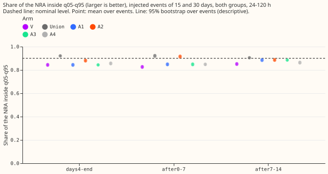
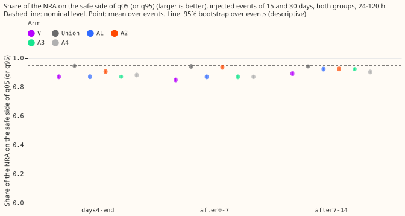
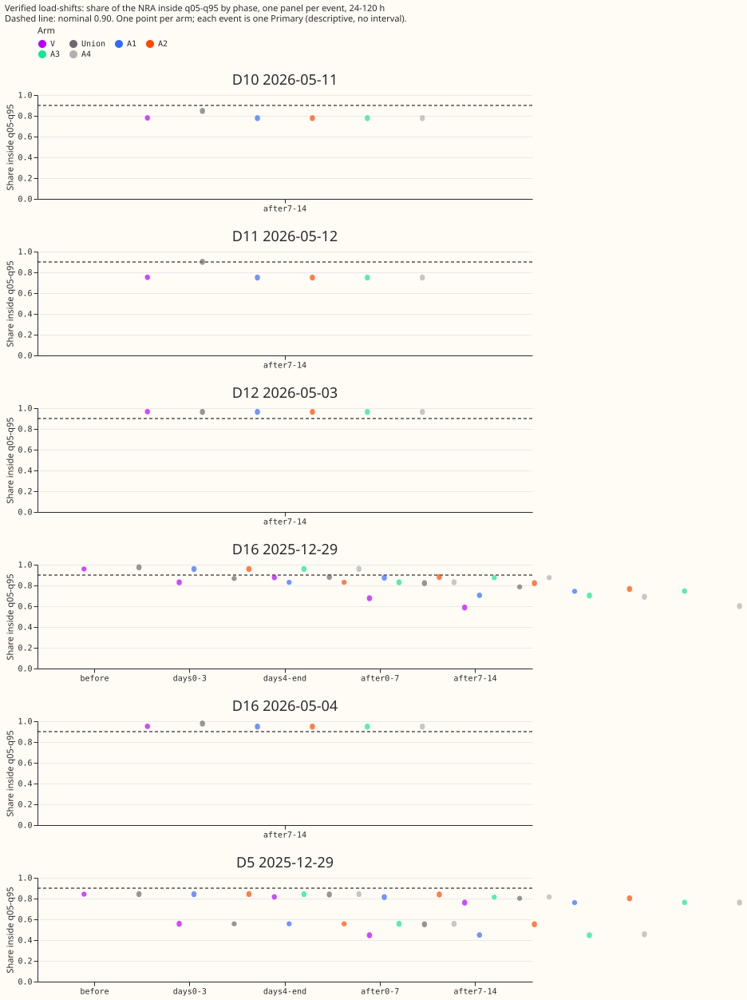
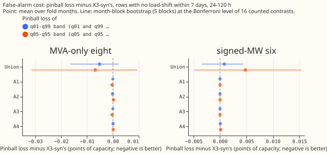
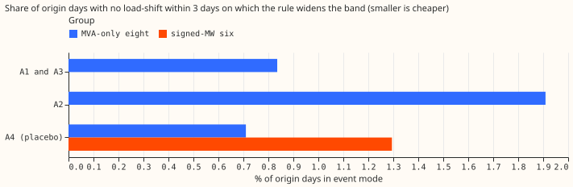
Day-ahead forecasts around the verified pair (coloured strips mark origin days in event mode):
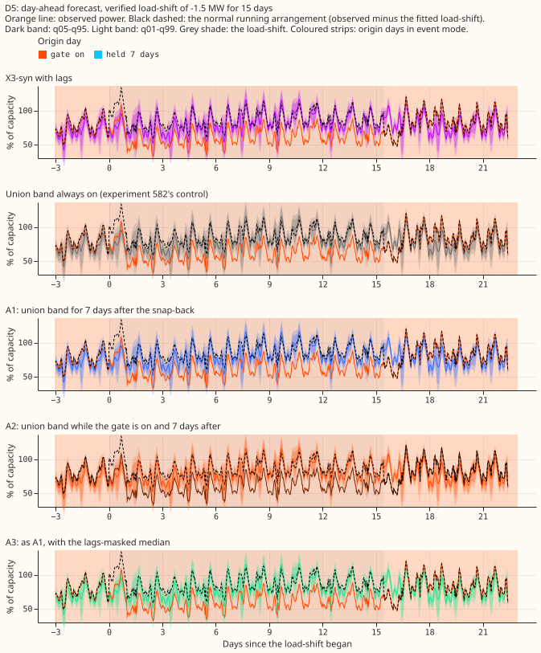
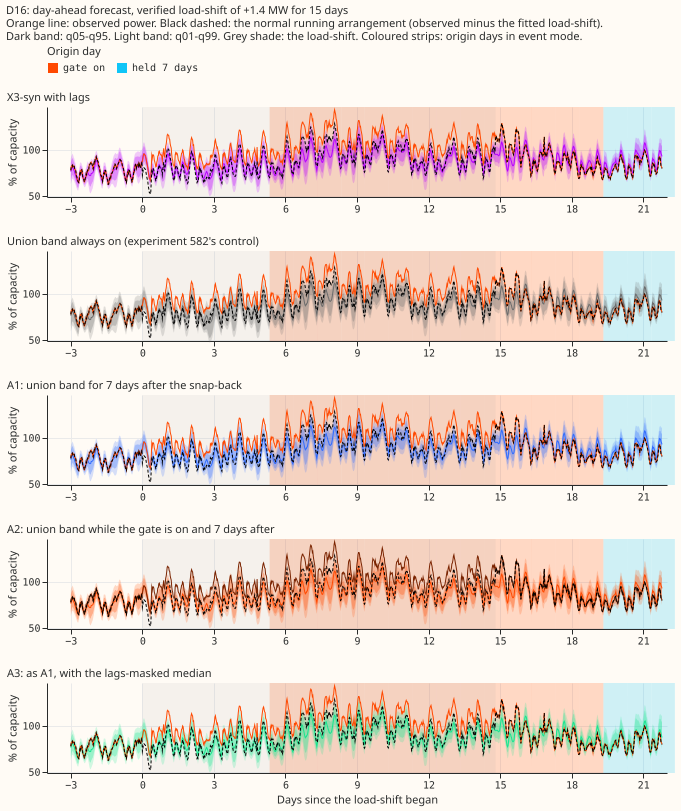
Day-ahead forecasts around injected events (a fixed selection rule: month 2025-10, the lowest-numbered Primary of each group for three length, depth, and sign combinations):
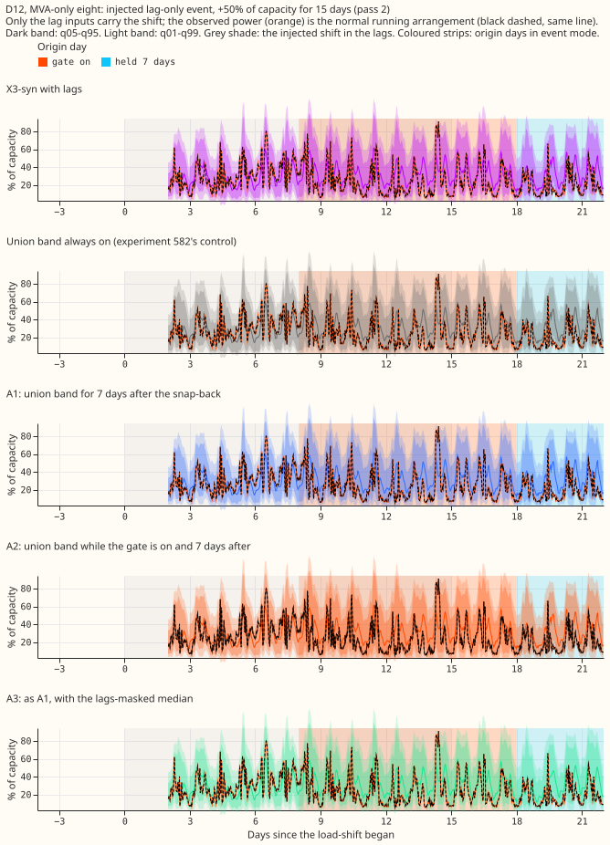
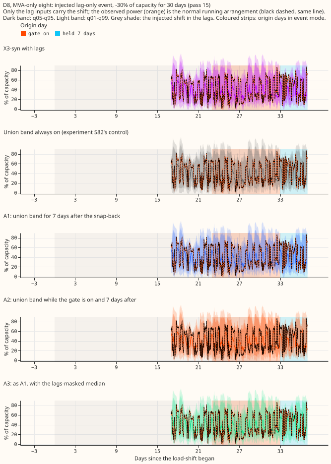
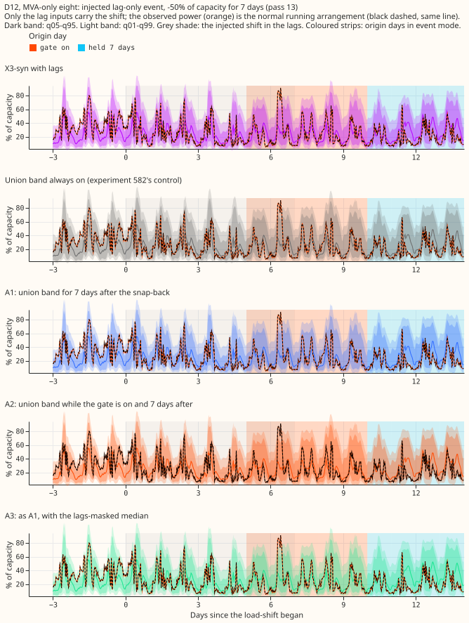
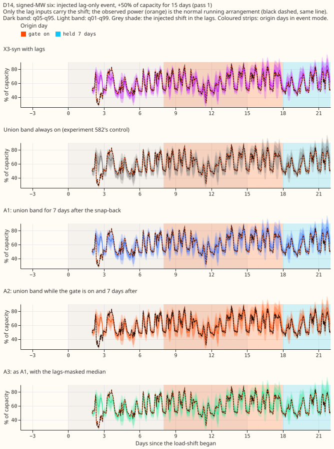
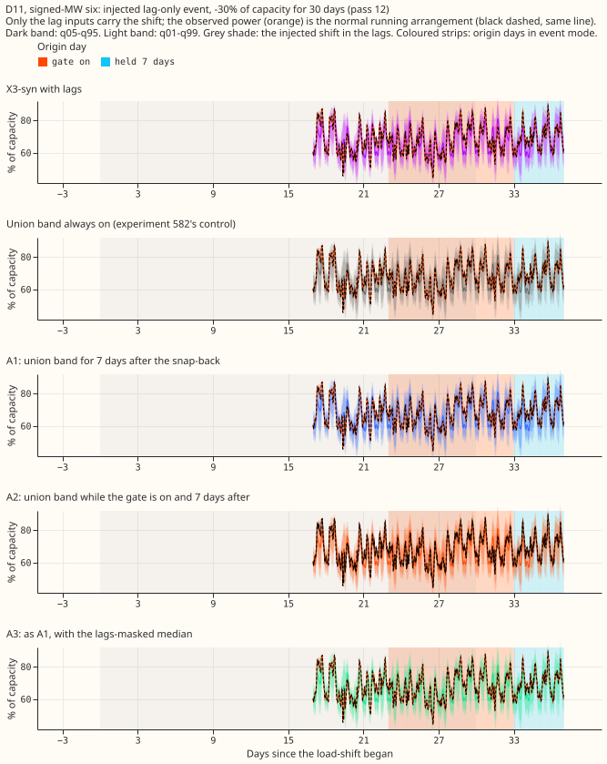
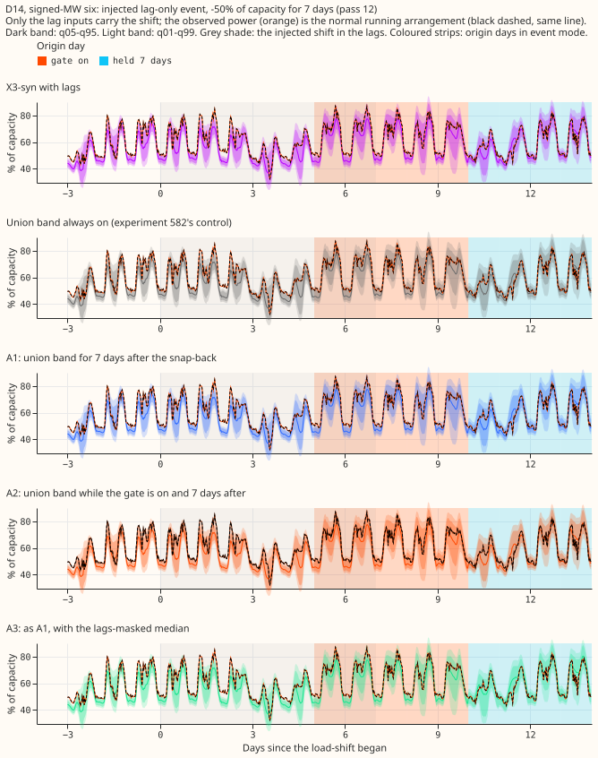
Full stored horizon of one run (X3-syn stores 0 to 120 h only):
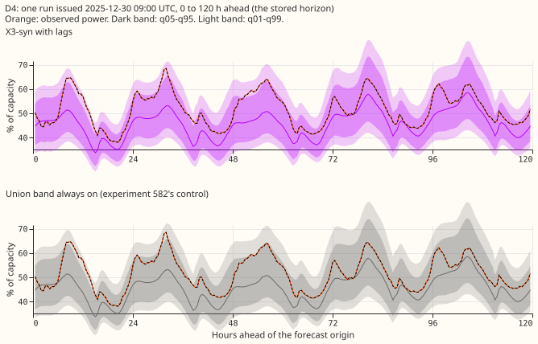
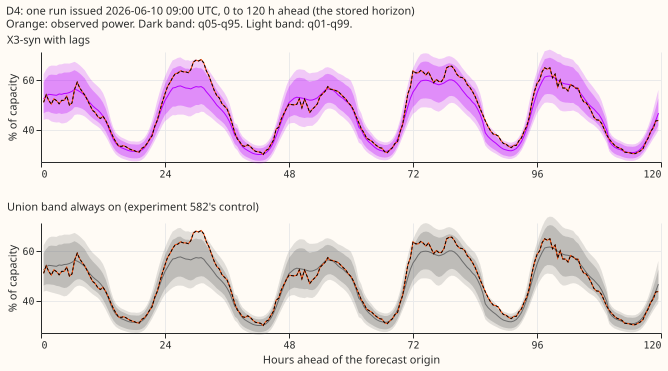
Other cuts (all lengths, each group alone) sit beside this page as coverage90_* and
nra_side95_*.
Results
- Arms: V is X3-syn with lags; M is the same weights with lags masked; Union is the widest of both bands on every row (experiment 582's control); A1 is the union band for 7 days from the origin day a snap-back is seen; A2 is the union band while the gate is on plus those 7 days; A3 is A1 with the lags-masked median; A4 is A1 at random days (20 draws, same count per Primary).
- Gate: own gap only (experiment 578's G1), 3 sustained days above max(3 standard deviations, 5% of capacity), reading only days at least 24 h old (newest day read: origin day minus 2). Snap-back: the newest gap day falls below half the threshold. Row set: the five fold months with stored X3-syn forecasts; 24-120 h unless stated; July 2026 unused. Retraining: none; the weights are experiment 581's.
- Injected bank, 24-120 h, 0-7 days after the end, 15 and 30 day events (672 Primary-events, both groups), q05-q95 coverage with 95% event-bootstrap interval:
| Arm | Coverage after end | Day 4 of the event to its end |
|---|---|---|
| V (X3-syn) | 0.826 (0.816 to 0.837) | 0.844 |
| M (lags masked) | 0.876 | 0.882 |
| Union (always on) | 0.921 (0.915 to 0.927) | 0.921 |
| A1 | 0.848 (0.839 to 0.857) | 0.844 |
| A2 | 0.915 (0.909 to 0.922) | 0.880 |
| A3 | 0.848 | 0.844 |
| A4 (placebo) | 0.847 (0.837 to 0.856) | 0.856 |
- A1 against the placebo: A1 minus A4 is +0.0014 (interval -0.0002 to +0.0031, audit). The 7-day widening applies to 25% of after-end rows when it starts at the snap-back, and to 21% when it starts on random days.
- Per group and length: the same pattern holds at the eight MVA Primaries and the six MW Primaries and at 7, 15, and 30 days (A1 within 0.004 of A4 except the six MW Primaries at 15 days, 0.871 against 0.867).
- Tails (24-120 h, injected 15 and 30 days, after the end): NRA-side share at q05 or q95 is
0.848
(V), 0.869 (A1), 0.936 (A2), 0.941 (Union), against 0.95 nominal. Pinball at q01 and q99 and the
coverage at q01-q99 are in
bank_summary.csv(private data folder). - Verified D5 and D16 pair, after the end (descriptive; one transfer pair, not two independent events):
| Event | V | A1 | A2 | Union |
|---|---|---|---|---|
| D16 | 0.677 | 0.703 | 0.822 | 0.822 |
| D5 | 0.447 | 0.447 | 0.552 | 0.552 |
- D5 is not a detection result: its gate turned on 19 days before the event, on a gap of the opposite sign, and did not release until 14 days after the end. A2 equals Union there because the gate was on, and A1 equals V because no snap-back fell inside the window.
- Timing on the bank: the gate triggered on 83% to 88% of events, a median 4 to 6 days after the onset. The snap-back was detected on 87% of events, a median 2 days after the end. The gate does not fire at Primaries with a high threshold (largest: 0.61 of capacity at one MVA Primary).
- Pinball loss on days with no load-shift (24-120 h, mean pinball in points of capacity, A1 and A2 against V): at the eight MVA Primaries, q05-q95 band -0.0003 and +0.0002, q01-q99 band 0.0000 and -0.0001; at the six MW Primaries exactly 0. The half-width of the Bonferroni interval (the minimum detectable effect here) is under 0.001 for A1 and A2. For comparison, the always-on union changes the same loss by -0.007 to +0.005 and widens the 90% band by 9% at the eight MVA Primaries and 8% at the six MW Primaries.
- Activity and false triggers: the gate is on for 1.1% of event-free origin days at the eight MVA Primaries and 0% at the six MW Primaries; there were 2 false triggers, 0.87 per Primary-year at the eight MVA Primaries and 0.47 over all 16 Primaries (prediction: at most 1; fails above 3).
- Predictions: P1 holds numerically (A1 0.848, and V's band already contains the NRA on 0.844 of rows from day 4 to the end) but not because of the rule. P2 holds (extra loss under 0.001 points, under 1 false trigger per Primary-year). P3 fails: the placebo's lift (+0.021) is 94% of A1's (+0.022), not under a quarter. Bonferroni count: 16 (4 arms, 2 groups, 2 coverage bands, event-free rows).
Checks
- Median minus mean forecast, per Primary: only 11 quantiles are stored, so the mean forecast is not stored. As a proxy, X3-syn's median minus the mean of its 11 quantiles is -0.008 of capacity on average (standard deviation 0.026), pooled over Primaries.
- Mean-forecast error beside the quantile contrasts: not available, for the same reason; the
median's absolute error is in
event_free.csv(ae50) and does not change for A1, A2, and A3 except through A3's median swap on held days. - Triggers fired: trigger 1 (a placebo control matched the rule). A fresh Sonnet audit re-derived every headline number from the stored forecasts with its own code, and all reproduced. It showed that the placebo performs as well as the rule, because the injected contamination is gone before the snap-back is detected. We accepted that result, and it is the main finding of this page.
- Code review (before the first run): a fresh Sonnet review found no leakage and six issues; four were fixed (event-free rows and activity shares polluted by holds after real events, false-trigger rate understated by month-start days that cannot trigger, misleading trigger-time rows, and a point estimate that did not match its interval). Two were kept as caveats: the design limit that a rule keyed on origin day covers about half of after-end rows (valid-time phases), and the gate threshold being computed on all five months.
Caveats and untested alternatives
- Width is untested: Union and A2 may gain coverage only because they are wider. A control that scales X3-syn's band to the same mean width would test this. It has not been run.
- Only two verified events, both from one transfer pair (a load moved from one Primary to the other and back).
- Injected events add a shift of constant depth to the lag inputs only, leaving the observed power unchanged, so the gate reads the injected lags and not a change in the power.
- Unlogged events: NGED's logs may miss events, so the event-free rows may contain events no label covers. The false-alarm loss measured on them is then too low, and the real-event slices undercount.
- Horizon: X3-syn stores 0 to 120 h. NGED cares about 1 to 10 days, so these results cover the short end only.
- Untested alternative: a rule fired by the lags themselves (a robust z-score of the newest day lag) would act at the snap-back itself rather than 2 days later; the gate cannot see the end earlier than the 24 h age rule allows.
- Reuse: code in
ml-experiments/00583-after-snap-back-event-band-on-x3-syn/, importing experiments 578, 581, and 582; no fitted models, no new forecasts; tables indata/ml-experiments/00583-after-snap-back-event-band-on-x3-syn/.